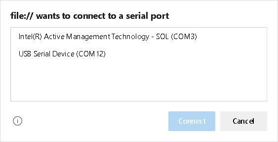

This implementation was purposely keep relatively simple so that students might easily understand the source code and adapt it for their use.
In order to use this logger, you must have enabled your browser's Experimental Web Platform Features. If you haven't already done that, copy and paste the appropriate link below to your browser's URL field, then enable those features in the resulting screen.
The web serial API enables the browser to communicate with serial ports on your PC. This application lets you communicate with embedded sensor boards which stream sensor readings in textual comma separated form (csv) over to your PC. This is not the most efficient method for conveying data, but it has the advantage of being simple and human readable. You must have installed a companion app to your embedded board for this to work properly. The only hard requirement on that companion app is that it stream data in CSV format. Whatever is streamed will be collected into your log file (after being prepended with sample numbers).
This application also makes use of the Native File System API for storing files on your PC. Again, you may have to explicitly enable these features as was done for the web serial API.
Clicking this button brings up a selector (see figure) showing the various serial port devices
connected to your PC. Select the port which corresponds to your development board and click 'Connect'.
At that point, the serial port will be opened and the "Capture data stream" checkbox will be enabled.

Check this control to start collecting data from the serial port. Data is stored (and added to over time) in an internal variable in your browser. When you uncheck the checkbox, you will stop accumulating new records. Once you uncheck the control, stored records will be shown in the logger console. Data is not saved to disk until you click the SaveAs button described below. If you recheck the checkbox, prior data is cleared out before you begin to accumulate new data records.
Click this button to clear the console. This button does NOT clear the internal record store, which is still available for download.
Click this button to initiate a download of saved records to the filename selected in the resulting file browser.
Use these controls to send a message to your embedded board. For the Arduino Nano 33 BLE Sense companion application, this would be digits 0 through 7, which simply set the color of the on-board tricolor LED. Command value '8' is reserved for keep-alive packets that are periodically sent to the board to keep the serial port channel active.